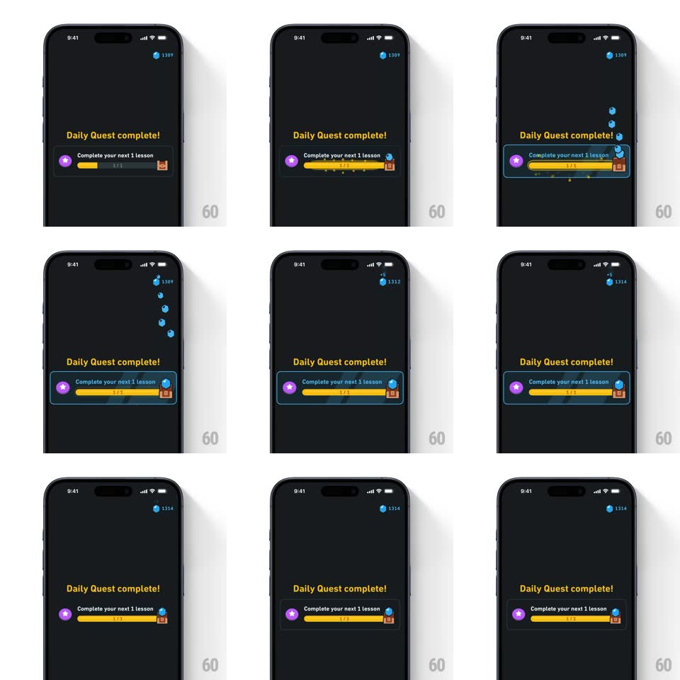

Media
Frame-by-frame

Rebuild this interaction 1:1: Duolingo's Daily Quest reward trail - the quest card's progress bar fills, then a stream of blue gems arcs out of the chest icon and flies up to the gem counter in the top-right, which ticks up as they land.

Rebuild this interaction 1:1: Duolingo's Daily Quest reward trail - the quest card's progress bar fills, then a stream of blue gems arcs out of the chest icon and flies up to the gem counter in the top-right, which ticks up as they land. ## Integration Integration: stack-agnostic spec - springs given as stiffness/damping, timed motions as duration + curve; map every value to your framework and animation library of choice. ## Scene Dark screen: "Daily Quest complete!" headline over a quest card (purple badge icon, "Complete your next 1 lesson", progress bar "1/1", chest icon at the right end). A gem counter sits top-right in the status bar area. ## Motion spec Pattern: currency fly-to-counter trail. - The progress bar fills left to right (600ms, ease-out) with a yellow glow at its leading edge. - On fill, the chest icon pops (scale 1 -> 1.3 -> 1, 250ms) and emits gems one by one (~90ms apart, ~7 gems). - Each gem flies along an arched path (up and right, slight parabolic curve, ~700ms) from the chest to the top-right counter, shrinking (1 -> 0.6) as it travels; paths vary slightly per gem (~20px jitter). - Each landing ticks the counter (+1 per gem, rolling digits, ~100ms) with a tiny scale pop on the counter icon. ## Calibration - Gems are the standard blue Duolingo gem shape; they fade out on landing, not on launch. - The trail overlaps - multiple gems are in flight at once, forming a visible stream. ## Reduced motion Bar fills, then the counter steps to the new total with a fade; no flying gems. ## Don't miss - The arc goes from bottom-center card to top-right - a long diagonal across the screen. - The counter's final value equals the starting value plus exactly the gems shown flying.